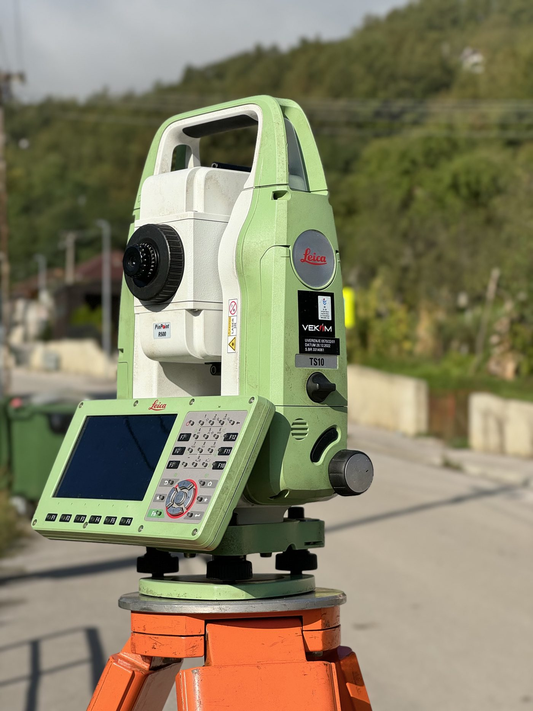

Geodeta Prijepolje — geodetska firma za obeležavanje parcela, katastarsko-topografski plan i geodetske elaborate. Skoro dve decenije poverenja opštine i privatnih investitora.

Poslujemo na teritoriji Opštine Prijepolje, a i šire, već više od 20 godina.

Prilikom poslovanja sa nama, svaka reč iz dogovora se ispoštuje od dogovora u kancelariji do izlaska na teren.

Maksimalno brzo izvršavamo dogovoreni posao, želeći da zadovoljimo kriterijume mušterije.
Devet oblasti rada koje pokrivaju najveći deo potreba fizičkih i pravnih lica u geodeziji i inženjerstvu.
Pravno i tehnički usklađeno deljenje katastarskih parcela.
Precizno obeležavanje granica pre početka gradnje.
Tehnička dokumentacija za izvođenje radova na terenu.
Snimanje terena i izrada plana za projektovanje i legalizaciju.
Vraćanje i fiksiranje graničnih tačaka po katastarskoj evidenciji.
Utvrđivanje tačne pozicije i podataka parcele na terenu.
Podužni i poprečni profili za projektovanje puteva i infrastrukture.
Podrška investitorima i izvođačima tokom čitavog projekta.
Pribavljanje ažurne katastarske dokumentacije o nepokretnosti.
Isti redosled koraka, bez obzira da li je u pitanju mala parcela ili veći infrastrukturni projekat.
Definišemo obim posla i zakazujemo termin merenja na licu mesta.
GNSS/RTK prijem i robotska totalna stanica beleže tačke sa centimetarskom preciznošću.
Izrada elaborata, plana ili projekta na osnovu prikupljenih koordinata.
Dokumentacija se overava i predaje katastru ili direktno klijentu.
Kratka objašnjenja termina na koje ćete najčešće naići prilikom saradnje sa geodetskom strukom.
Dokument koji sadrži sve podatke terenskog merenja — koordinate, skice i izračunavanja — a koji se predaje katastru radi upisa promena na parceli ili objektu.
Pre svake gradnje potrebno je obeležiti granice parcele i temeljne linije objekta, kako bi se izbegao spor sa susedima i neusklađenost sa projektom.
Metoda satelitskog pozicioniranja u realnom vremenu koja omogućava merenje koordinata tačaka na terenu sa preciznošću od svega nekoliko centimetara.
Prikaz reljefa, objekata i granica parcele u razmeri, neophodan za izradu projekata, legalizaciju i izdavanje građevinske dozvole.
Naša firma posluje više od 20 godina, tokom kojih smo težili da ispunimo visoke kriterijume koje smo sami sebi zadali.
Korisnici naših usluga su mnoga fizička lica, kao i pravna lica — kako iz javnog, tako i iz privatnog sektora. Koristimo savremene Leica merne instrumente, kojima ispunjavamo i najzahtevnije kriterijume naših klijenata.

Višegodišnji smo saradnici sa Opštinom Prijepolje, za koju obavljamo poslove iz oblasti geodezije.
Opština PrijepoljeSarađujemo sa velikim brojem privatnih firmi sa kojima smo, osim dobrih poslovnih, stekli i prijateljske odnose.
Privatni partneri| Ponedeljak | 7:30 – 15:30 |
| Utorak | 7:30 – 15:30 |
| Sreda | 7:30 – 15:30 |
| Četvrtak | 7:30 – 15:30 |
| Petak | 7:30 – 15:30 |
| Subota | Ne radimo |
| Nedelja | Ne radimo |
Za terenska merenja preporučujemo najavu bar dan unapred, posebno u periodu proleće–jesen kada je obim poslova najveći. Za hitne slučajeve, pozovite nas telefonom — trudimo se da izađemo na teren u najkraćem mogućem roku.
Za svaku Vašu nedoumicu ili pitanje stojimo na raspolaganju. Kontaktirajte nas kako bi pronašli najbolje rešenje za Vas.